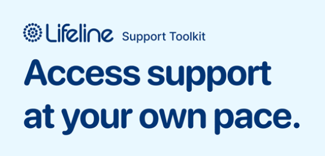

Where can Teenagers Get Help?
Kids Helpline
Kids Helpline provides free support and counselling (talking through problems) to people aged 5-25. You can talk to Kids Helpline about anything whether it's big or small, serious or silly. Kids Helpline is always available to help you.

Lifeline
Lifeline is Australia's leading suicide prevention service. Within seconds a trained professional will be on call. Communicating with you through the Lifeline communicator unit connected to the telephone.

Reachout
Reachout helps young people to understand and recognise signs and symptoms related to mental health issues and understand mental health concepts. Reachout can get you guidance on how to seek help or build skills for coping and resilience.
Beyond Blue
Beyond Blue is an organisation that provides a free online and telephone helpline for people with depression, anxiety or other mental health issues. Beyond blue’s trained professionals offer you guidance and support to get you over your struggles and find yourself again.